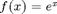
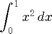

Math 340 - Lab #9 - Numerical Integration
(Problems from homework: Section 5.1.: 2, 5b.)
Contents
# 1
Evaluate all the integrals (Section 5.1. #2) for n=2, 4, 8, …, 512 using the Trapezoidal Rule, Simpson’s Rule and Midpoint Rule. Comment on the results.
clear all; clc % functions to be integrated f = {@(x) exp(x).*cos(4.*x), @(x) x.^(5/2), @(x) exp(cos(x)), @(x) exp(cos(x)), @(x) x.^(1/2)}; % lower limit of integration a = [0, 0, -pi, 0, 0]; % upper limit of integration b = [pi, 1, pi, pi/4, 1]; % exact solutions: int_exact = [(exp(pi)-1)/17, 2/7, 7.95492652101284, 1.93973485062365, 2/3]; % number of points: n = 2.^([1:9]); for i = 1:length(f) fprintf(' N Trapezoidal Rule Simpson Rule Midpoint Rule \n') fprintf('================================================================\n') for j = 1:length(n) fprintf('%3i %15.6f %17.6f %15.6f \n', n(j), trapezoidal(f{i},a(i),b(i),n(j)), ... simpson(f{i},a(i),b(i),n(j)), midpoint(f{i},a(i),b(i),n(j)) ) end fprintf('Exact solution = %f \n \n',int_exact(i)) end
N Trapezoidal Rule Simpson Rule Midpoint Rule ================================================================ 2 26.516336 22.715077 -20.018235 4 3.249050 -4.506711 -0.000000 8 1.624525 1.083017 1.126920 16 1.375723 1.292788 1.264901 32 1.320312 1.301842 1.293384 64 1.306848 1.302360 1.300163 128 1.303506 1.302392 1.301838 256 1.302672 1.302394 1.302255 512 1.302463 1.302394 1.302359 Exact solution = 1.302394 N Trapezoidal Rule Simpson Rule Midpoint Rule ================================================================ 2 0.338388 0.284518 0.259195 4 0.298791 0.285593 0.279158 8 0.288975 0.285702 0.284082 16 0.286529 0.285713 0.285307 32 0.285918 0.285714 0.285613 64 0.285765 0.285714 0.285689 128 0.285727 0.285714 0.285708 256 0.285717 0.285714 0.285713 512 0.285715 0.285714 0.285714 Exact solution = 0.285714 N Trapezoidal Rule Simpson Rule Midpoint Rule ================================================================ 2 9.695462 12.156797 6.283185 4 7.989323 7.420611 7.920532 8 7.954928 7.943463 7.954925 16 7.954927 7.954926 7.954927 32 7.954927 7.954927 7.954927 64 7.954927 7.954927 7.954927 128 7.954927 7.954927 7.954927 256 7.954927 7.954927 7.954927 512 7.954927 7.954927 7.954927 Exact solution = 7.954927 N Trapezoidal Rule Simpson Rule Midpoint Rule ================================================================ 2 1.921179 1.940270 1.949060 4 1.935120 1.939766 1.942045 8 1.938583 1.939737 1.940311 16 1.939447 1.939735 1.939879 32 1.939663 1.939735 1.939771 64 1.939717 1.939735 1.939744 128 1.939730 1.939735 1.939737 256 1.939734 1.939735 1.939735 512 1.939735 1.939735 1.939735 Exact solution = 1.939735 N Trapezoidal Rule Simpson Rule Midpoint Rule ================================================================ 2 0.603553 0.638071 0.683013 4 0.643283 0.656526 0.672977 8 0.658130 0.663079 0.669032 16 0.663581 0.665398 0.667537 32 0.665559 0.666218 0.666983 64 0.666271 0.666508 0.666781 128 0.666526 0.666611 0.666707 256 0.666617 0.666647 0.666681 512 0.666649 0.666660 0.666672 Exact solution = 0.666667
# 2
Use Trapezoidal rule and Simpson’s Rule ( with n=2, 4, 8, …, 512) to compute the length of

on .clear all; clc % integrand f = @(x) sqrt(1 + exp(2.*x)); % end points for integration a = 0; b = 1; % number of points: n = 2.^([1:9]); fprintf(' N Trapezoidal Rule Simpson Rule Midpoint Rule \n') fprintf('================================================================\n') for j = 1:length(n) fprintf('%3i %15.6f %17.6f %15.6f \n', n(j), trapezoidal(f,a,b,n(j)), ... simpson(f,a,b,n(j)), midpoint(f,a,b,n(j)) ) end
N Trapezoidal Rule Simpson Rule Midpoint Rule ================================================================ 2 2.041792 2.003957 1.984395 4 2.013094 2.003527 1.998702 8 2.005898 2.003499 2.002297 16 2.004097 2.003497 2.003197 32 2.003647 2.003497 2.003422 64 2.003535 2.003497 2.003478 128 2.003506 2.003497 2.003492 256 2.003499 2.003497 2.003496 512 2.003498 2.003497 2.003497
Example:
Trapeziodal rule for approximating

clear all; clc
f = @(x) x.^2;
a = 0; b = 1; n = 32;
Integral = trapezoidal(f,a,b,n);
Table print out
Print your results in a table form for each of the integrals with different methods in columns and number of points in rows.
fprintf('N Trapezoidal Rule Simpson Rule Midpoint Rule \n') fprintf('================================================================\n')
N Trapezoidal Rule Simpson Rule Midpoint Rule ================================================================